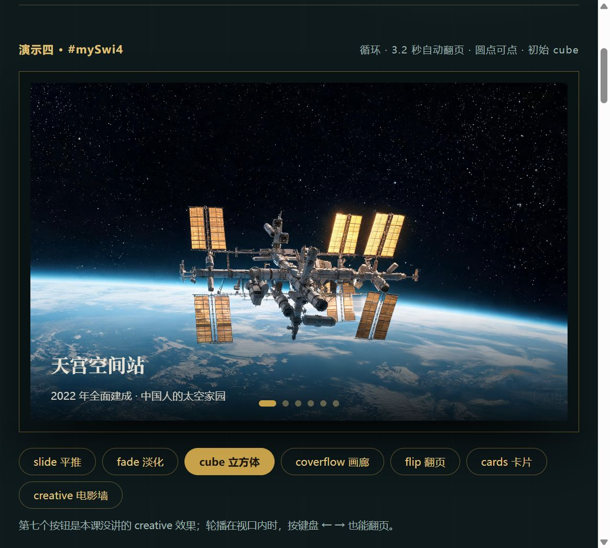

01任务一 · 两轮提示词配置演示四
不写代码写提示词：目标需求 ① 无缝循环 ② 3.2 秒自动翻页且手动操作后不停止 ③ 圆点分页器可点击 ④ 初始效果 cube
第 1 轮提示词（初版）
帮我用 Swiper 写一个轮播初始化配置：
new Swiper('#mySwi4', {...})，要求自动播放，每 3.2 秒翻一页，带圆点分页器，初始效果是 cube。
AI 第 1 轮回答
可以这样写：
new Swiper('#mySwi4', {
autoplay: { delay: 3200 },
pagination: { el: '#wy_pagination' },
effect: 'cube'
});
拖动以后自动播放会停下来，这是默认行为。
验证结果：3 条需求没达成。
① 没有 loop，最后一张继续往后翻会卡住；② 没有 disableOnInteraction: false，拖动一次后自动播放停止；③ 没有 clickable: true，圆点只能看不能点。只有「3.2 秒自动播放」和「初始 cube」是对的。
第 2 轮提示词（补齐遗漏）
第 1 版漏了三处，请补进配置里：① 加上
loop: true 实现无缝循环；② 在 autoplay 里加 disableOnInteraction: false，让手动拖动后继续自动翻页；③ 在 pagination 里加 clickable: true，让圆点可以点击跳转。其余部分保持不变，并逐条说明每个参数的作用。
AI 第 2 轮回答（最终采用）
new Swiper('#mySwi4', {
loop: true, // 无缝循环
speed: 800, // 翻页动画 0.8 秒
autoplay: {
delay: 3200, // 每 3.2 秒翻一页
disableOnInteraction: false // 手动操作后不停止
},
pagination: {
el: '#wy_pagination',
clickable: true // 圆点可点击
},
effect: 'cube', // 初始 3D 立方体
cubeEffect: { shadow: true, slideShadows: true }
});
| 需求 | 验证方式 | 结果 |
|---|---|---|
| ① 无缝循环 | 翻到第 6 张继续往后翻 | PASS · 回到第 1 张 |
| ② 3.2 秒自动翻页 | 不做任何操作，观察翻页间隔 | PASS · 约 3 秒切换 |
| ② 手动后不停止 | 拖动一次后继续等待 | PASS · 仍在自动翻 |
| ③ 圆点可点击 | 点第 4 个圆点 | PASS · 跳到第 4 张 |
| ④ 初始 cube | 刷新页面观察首屏 | PASS · 3D 立方体 |

一句话结论：4 条需求全部实测通过，第 1 版提示词漏了循环、拖动后继续播放、圆点可点击三项，第 2 轮逐条点名后才补齐。